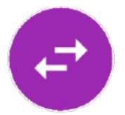
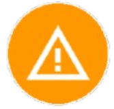
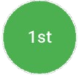

Escâner de Cartas
Ainda em desenvolvimento.
Coleções Oficiais
Página principal com as coleções oficiais do padrão internacional (EN - PT). Novas coleções são adicionadas no dia do lançamento oficial.
É possível filtrar coleções por série e utilizar tags para marcar suas favoritas.
Todas as Cartas
Visualização completa de todas as cartas disponíveis no banco de dados. Recomendamos manter ativada a opção “limitar resultados de busca” para otimizar as pesquisas.
Pokédex
Visualize os Pokémons e suas formas alternativas. Veja quais você já possui cadastrados e marque seus favoritos com tags.
Coleções Japonesas
Veja coleções e cartas da versão japonesa. Algumas podem ter nomes e listas diferentes, com cartas exclusivas que não foram lançadas no ocidente.
Outras Coleções
Visualize as cartas em grupos pré-definidos. Filtre por Tipo, Raridades, Artistas e Sub-categorias.
Listas Pessoais
Crie suas próprias listas de cartas e baralhos. Importe e exporte no formato Pokémon Live.
Ao criar uma lista do tipo “Deck”, algumas regras são aplicadas (ex.: não utilizar mais de 4 cartas iguais).
Estatísticas
Visualize um resumo da sua coleção. Veja a porcentagem de cartas marcadas como “Tenho”, “Tenho reverse” e “Preciso”.
Produtos
Marque sua coleção de produtos físicos como moedas e sleeves oficiais.
Configurações
- Salve e importe backup das suas Tags. Recomendamos fazer isso antes de desinstalar o aplicativo. Seus dados não são armazenados fora do seu celular.
- Importar IDs permite pesquisar em massa utilizando o padrão PokéLens de identificação.
- Aplique personalizações: tema escuro, limite de busca, limite para imagens salvas em cache, entre outros.
Tags
Utilize tags para marcar suas cartas. Combine tags com filtros para refinar as consultas.
Nota: Não mantemos dados de quais cartas têm versões alternativas ou não (ex.: reverse foil ou pokéball foil).
- Tenho — Marca cartas que você possui (usada em Estatísticas).
- Tenho Reverse — Marca cartas que você possui em versão reverse (usada em Estatísticas).
- Preciso — Marcação para cartas que você procura (usada em Estatísticas).
- Para Troca — Cartas que você disponibiliza para troca.
- Compra — Cartas que está separando para comprar.
- Danificadas — Cartas com condições ruins.
- Ignorar — Ao marcar, a carta não aparece nas consultas, mas ainda conta no total das Estatísticas.
- Favoritas — Marque suas cartas preferidas.
 Alternativas — Versões alternativas (ex.: liga, promo).
Alternativas — Versões alternativas (ex.: liga, promo).- Outros idiomas — Cartas em idioma diferente do principal.
- Pokeball foil — Marcação para edições especiais.
- Masterball foil — Marcação para edições especiais.
- First edition — Cartas do Base series podiam ter essa marcação.
- Foil — Geralmente uma carta não tem as três versões: foil, reverse foil e regular. Mas pode usar caso queira especificar.
Filtros e Ordenação
Deslize para esquerda para abrir a guia de filtros. Filtre por Tags ou por categorias. Alguns filtros são pré-inicializados dependendo das coleções abertas.
A Tag “Ignorar” inicia ligada em “Não associadas” para não mostrar essas cartas. Escolha diferentes tamanhos de visualização para listas (útil para prints).